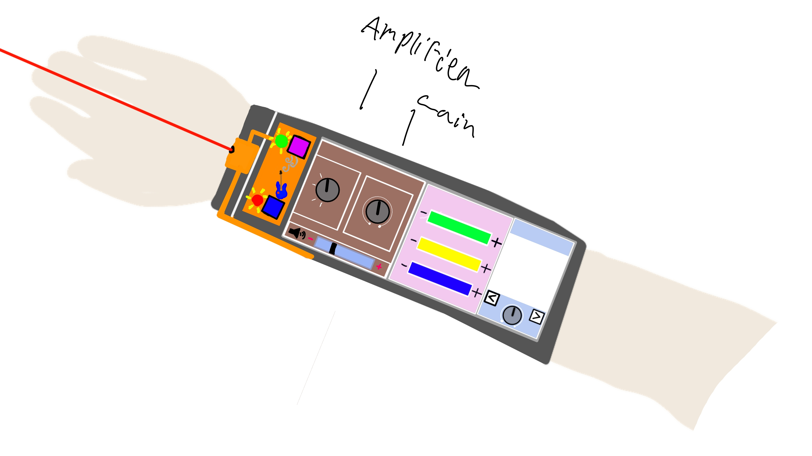
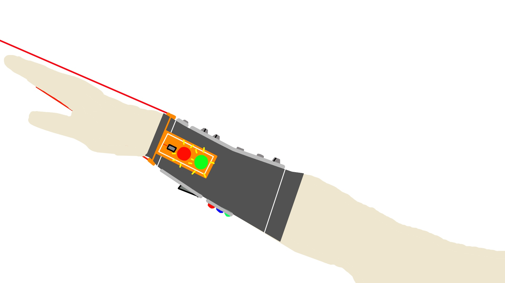

For school we were tasked with designing our own product with principles of design for behaviour.
The project: Guitar bracelet
The concept was my way of visualizing the potential future of music creation. I looked back at myself with playing guitar and others and tried to
find a new way to experience making music. The idea of the bracelet is to make music production more compact with the bracelet containing different
tools some guitarists use like guitar pedals. With principles of design for behaviour I tried to make it enjoyable and intuitive to play.
A real life product that shows the power of compactibility is the OP-1 where you can create a whole song with a small device that makes music production
more portable.
See the pdf below for more details.